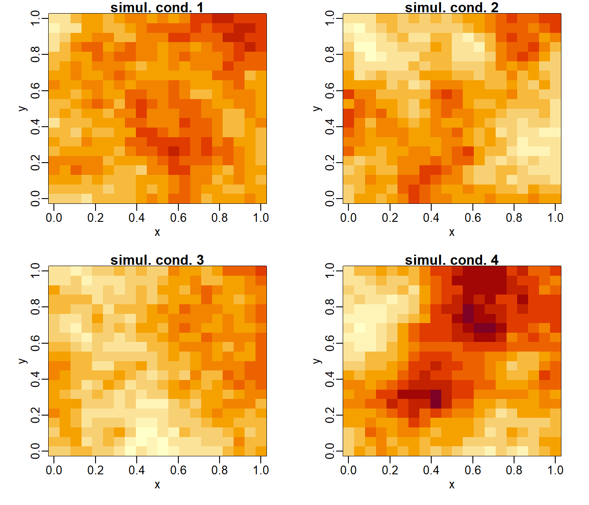

7.5 Simulación condicional e incondicional
En ocasiones en inferencia estadística interesa la simulación condicional de nuevos valores de forma que se preserven los datos observados, para lo que se suele emplear el algoritmo anterior partiendo de la muestra observada:
Algoritmo 7.5 (de simulación condicional)
Obtener la distribución condicional (correspondiente al punto que se quiere simular) dada la muestra y los valores simulados anteriormente.
Simular un valor de la distribución condicional.
Agregar este valor al conjunto de datos y volver al paso 1.
En el caso de normalidad, en lugar de simular punto a punto, podemos obtener fácilmente la distribución condicionada para simular los valores de forma conjunta.
7.5.1 Simulación condicional de una normal multivariante
Si \(\mathbf{X} \sim \mathcal{N}_d\left( \boldsymbol\mu,\Sigma \right)\) es tal que \(\mathbf{X}\), \(\boldsymbol\mu\) y \(\boldsymbol\Sigma\) se particionan de la forma: \[\mathbf{X} = \begin{pmatrix} \mathbf{X}_1 \\ \mathbf{X}_2 \end{pmatrix}, \boldsymbol\mu = \begin{pmatrix} \boldsymbol\mu_1 \\ \boldsymbol\mu_2 \end{pmatrix}, \boldsymbol\Sigma = \begin{pmatrix} \boldsymbol\Sigma_{11} & \boldsymbol\Sigma_{12} \\ \boldsymbol\Sigma_{21} & \boldsymbol\Sigma_{22} \end{pmatrix},\] suponiendo que \(\mathbf{X}_1\) se corresponde con los valores observados y \(\mathbf{X}_2\) con los que se pretende simular, entonces puede verse (e.g. Ripley, 1987) que la distribución de \(\mathbf{X}_2 | \mathbf{X}_1\) es normal con:
\[\begin{equation} E \left( \mathbf{X}_2 | \mathbf{X}_1 \right) = \boldsymbol\mu_2 + \boldsymbol\Sigma_{21} \boldsymbol\Sigma_{11}^{-1} \left( \mathbf{X}_1 - \boldsymbol\mu_1 \right), \tag{7.1} \end{equation}\]
\[\begin{equation} Cov \left( \mathbf{X}_2 | \mathbf{X}_1 \right) = \boldsymbol\Sigma_{22} - \boldsymbol\Sigma_{21} \boldsymbol\Sigma_{11}^{-1} \boldsymbol\Sigma_{12}. \tag{7.2} \end{equation}\]
Nota: La ecuación (7.1) coincide con la expresión de la predicción lineal óptima de \(\mathbf{X}_2\) a partir de \(\mathbf{X}_1\) con media y varianzas conocidas (denominado predictor del kriging simple en estadística espacial, y la diagonal de (7.2) son las correspondientes varianzas kriging).
Continuando con el Ejemplo 7.4 anterior, consideramos los primeros valores de una simulación incondicional como los datos:
idata <- t < 0.5
# idata <- t < 0.2 | t > 0.8
mu1 <- mu[idata]
n1 <- length(mu1)
cov.data <- x.cov[idata, idata]
U <- chol(cov.data)
# Simulación (incondicional):
set.seed(1)
data <- drop(mu1 + t(U) %*% rnorm(n1))Para obtener la simulación condicional en los puntos de predicción, calculamos la correspondiente media y matriz de covarianzas condicionadas:
mu2 <- mu[!idata]
n2 <- length(mu2)
cov.pred <- x.cov[!idata, !idata]
cov.preddat <- x.cov[!idata, idata]
# Cálculo de los pesos kriging:
cov.data.inv <- chol2inv(U)
lambda <- cov.preddat %*% cov.data.inv
# La media serán las predicciones del kriging simple:
kpred <- mu2 + drop(lambda %*% (data - mu1))
# Varianza de la distribución condicional
kcov <- cov.pred - lambda %*% t(cov.preddat)
# (La diagonal serán las varianzas kriging). Las simulaciones condicionales se obtendrán de forma análoga (Figura 7.4):
z <- matrix(rnorm(nsim * n2), nrow = n2)
y <- kpred + t(chol(kcov)) %*% z
# Representación gráfica:
plot(t, mu, type = "l", lwd = 2, ylab = "y", ylim = c(-3.5, 3.5)) # media teórica
lines(t[idata], data) # datos
# y <- rep(NA, n)
# y[idata] <- data
# lines(t, y)
matplot(t[!idata], y, type = "l", add = TRUE) # simulaciones condicionales
lines(t[!idata], kpred, lwd = 2, lty = 2) # media condicional (predicción kriging)
Figura 7.4: Realizaciones condicionales del proceso funcional del Ejemplo 7.7.
Consideramos un proceso espacial bidimensional normal \(Z(\mathbf{s})\equiv Z(x,y)\) de media 0 y covariograma exponencial: \[Cov(Z(\mathbf{s}_1),Z(\mathbf{s}_2)) = C(\left\Vert \mathbf{s}_1-\mathbf{s}_2\right\Vert ) = e^{-\left\Vert \mathbf{s}_1-\mathbf{s}_2\right\Vert }.\]
En primer lugar, obtendremos una simulación del proceso en las posiciones
\(\left\{(0,0),(0,1),(1,0),(1,1)\right\}\) que será considerada posteriormente
como los datos observados.
Empleando las herramientas del paquete geoR, resulta muy fácil obtener
una simulación incondicional en una rejilla en el cuadrado unidad
mediante la función grf:
library(geoR)
n <- 4
set.seed(1)
z <- grf(n, grid = "reg", cov.pars = c(1, 1))## grf: generating grid 2 * 2 with 4 points
## grf: process with 1 covariance structure(s)
## grf: nugget effect is: tausq= 0
## grf: covariance model 1 is: exponential(sigmasq=1, phi=1)
## grf: decomposition algorithm used is: cholesky
## grf: End of simulation procedure. Number of realizations: 1# names(z)
z$coords## x y
## [1,] 0 0
## [2,] 1 0
## [3,] 0 1
## [4,] 1 1z$data## [1] -0.62645381 -0.05969442 -0.98014198 1.09215113La grf función emplea por defecto el método de la factorización de la matriz de covarianzas,
sin embargo, si se desean obtener múltiples realizaciones, en lugar de llamar repetidamente a esta función (lo que implicaría factorizar repetidamente la matriz de covarianzas),
puede ser preferible emplear un código similar al siguiente (de forma que solo se realiza una vez dicha factorización, y suponiendo además que no es necesario conservar las distintas realizaciones):
# Posiciones datos
nx <- c(2, 2)
data.s <- expand.grid(x = seq(0, 1, len = nx[1]), y = seq(0, 1, len = nx[2]))
# plot(data.s, type = "p", pch = 20, asp = 1) # Representar posiciones
# Matriz de varianzas covarianzas
cov.matrix <- varcov.spatial(coords=data.s, cov.pars=c(1,1))$varcov
cov.matrix## [,1] [,2] [,3] [,4]
## [1,] 1.0000000 0.3678794 0.3678794 0.2431167
## [2,] 0.3678794 1.0000000 0.2431167 0.3678794
## [3,] 0.3678794 0.2431167 1.0000000 0.3678794
## [4,] 0.2431167 0.3678794 0.3678794 1.0000000# Simular valores
set.seed(1)
L <- t(chol(cov.matrix))
# Bucle simulación
nsim <- 1 # 1000
for (i in 1:nsim) {
y <- L %*% rnorm(n)
# calcular estadísticos, errores,...
}
y## [,1]
## [1,] -0.62645381
## [2,] -0.05969442
## [3,] -0.98014198
## [4,] 1.09215113Para generar simulaciones condicionales podemos emplear la función krige.conv.
Por ejemplo, para generar 4 simulaciones en la rejilla regular \(10\times10\) en el cuadrado unidad \([0,1] \times [0,1]\) condicionadas a los valores generados en el apartado anterior podríamos emplear el siguiente código:
# Posiciones simulación condicional
new.nx <- c(20, 20)
new.x <- seq(0, 1, len = new.nx[1])
new.y <- seq(0, 1, len = new.nx[2])
new.s <- expand.grid(x = new.x, y = new.y)
plot(data.s, type = "p", pch = 20, asp = 1)
points(new.s)Figura 7.5: Posiciones espaciales de las simulaciones condicionales (y las de los datos).
# Simulación condicional
set.seed(1)
nsim.cond <- 4
s.out <- output.control(n.predictive = nsim.cond)
kc <- krige.conv(z, loc = new.s, output = s.out,
krige = krige.control(type.krige="SK", beta = 0, cov.pars = c(1, 1)))## krige.conv: results will be returned only for prediction locations inside the borders
## krige.conv: model with constant mean
## krige.conv: sampling from the predictive distribution (conditional simulations)
## krige.conv: Kriging performed using global neighbourhoodSi las representamos podemos confirmar que los valores en las posiciones \(\left\{(0,0),(0,1),(1,0),(1,1)\right\}\) coinciden con los generados anteriormente.
# Generar gráficos
par.old <- par(mfrow = c(2, 2), mar = c(3.5, 3.5, 1, 2), mgp = c(1.5, .5, 0))
zlim <- range(kc$simul) # Escala común
# La versión actual de geoR::image.kriging() no admite múltiples gráficos en una ventana
# image(kc, val=kc$simul[,1], main="simul. cond. 1", zlim=zlim)
# image(kc, val=kc$simul[,2], main="simul. cond. 2", zlim=zlim)
# image(kc, val=kc$simul[,3], main="simul. cond. 3", zlim=zlim)
# image(kc, val=kc$simul[,4], main="simul. cond. 4", zlim=zlim)
dim(kc$simul) <- c(new.nx, nsim.cond)
image(new.x, new.y, kc$simul[,,1], main="simul. cond. 1",
xlab = "x", ylab = "y", zlim = zlim)
image(new.x, new.y, kc$simul[,,2], main="simul. cond. 2",
xlab = "x", ylab = "y", zlim = zlim)
image(new.x, new.y, kc$simul[,,3], main="simul. cond. 3",
xlab = "x", ylab = "y", zlim = zlim)
image(new.x, new.y, kc$simul[,,4], main="simul. cond. 4",
xlab = "x", ylab = "y", zlim = zlim)
par(par.old)7.5.2 Simulación condicional a partir de un modelo ajustado
En la práctica normalmente se ajusta un modelo a los datos observados y posteriormente se obtienen las simulaciones condicionadas empleando el modelo ajustado.
En R se incluye una función genérica16 simulate() que permite generar respuestas a partir de modelos ajustados (siempre que esté implementado el método correspondiente al tipo de modelo).
Los métodos para modelos lineales y modelos lineales generalizamos están implementados en el paquete base stats.
Muchos otros paquetes que proporcionan modelos adicionales, implementan también los correspondientes métodos simulate().
Por ejemplo, en el caso de series de tiempo, el paquete forecast permite ajustar distintos tipos de modelos y generar simulaciones a partir de ellos:
library(forecast)
data <- window(co2, 1990) # datos de co2 desde 1990
plot(data, ylab = expression("Atmospheric concentration of CO"[2]),
xlim = c(1990, 2000), ylim = c(350, 375))# Se podrían ajustar distintos tipos de modelos
fit <- ets(data)
# fit <- auto.arima(data)Podemos obtener predicciones (media de la distribución condicional) e intervalos de predicción:
pred <- forecast(fit, h = 24, level = 95)
pred## Point Forecast Lo 95 Hi 95
## Jan 1998 365.1118 364.5342 365.6894
## Feb 1998 366.1195 365.4572 366.7819
## Mar 1998 367.0161 366.2786 367.7535
## Apr 1998 368.2749 367.4693 369.0806
## May 1998 368.9282 368.0596 369.7968
## Jun 1998 368.2240 367.2967 369.1513
## Jul 1998 366.5823 365.5997 367.5649
## Aug 1998 364.4895 363.4546 365.5244
## Sep 1998 362.6586 361.5738 363.7434
## Oct 1998 362.7805 361.6479 363.9130
## Nov 1998 364.2045 363.0262 365.3829
## Dec 1998 365.5250 364.3025 366.7476
## Jan 1999 366.6002 365.3349 367.8654
## Feb 1999 367.6078 366.3013 368.9144
## Mar 1999 368.5044 367.1578 369.8510
## Apr 1999 369.7633 368.3777 371.1488
## May 1999 370.4165 368.9930 371.8400
## Jun 1999 369.7124 368.2519 371.1728
## Jul 1999 368.0706 366.5741 369.5671
## Aug 1999 365.9778 364.4461 367.5096
## Sep 1999 364.1469 362.5806 365.7131
## Oct 1999 364.2688 362.6688 365.8688
## Nov 1999 365.6929 364.0597 367.3260
## Dec 1999 367.0134 365.3477 368.6790Para análisis adicionales nos puede interesar generar simulaciones (por defecto de la distribución condicional, future = TRUE):
set.seed(321)
sim.cond <- simulate(fit, 24)
plot(pred)
lines(sim.cond, lwd = 2, col = "red")Figura 7.6: Ejemplo de una serie de tiempo (datos observados de co2 en el observatorio Mauna Loa), predicciones futuras (en azul; media distribución condicional) y simulación condicional (en rojo) obtenidas a partir de un modelo ajustado.
Para más detalles ver Hyndman y Athanasopoulos (2018, secciones 4.3 y 11.4).
Se pueden implementar métodos específicos para cada tipo (clase) de objeto; en este caso para cada tipo de modelo ajustado y podemos mostrar los disponibles mediante el comando
methods(simulate).↩︎